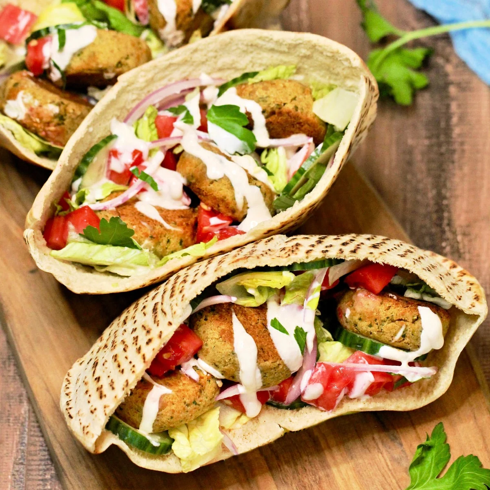
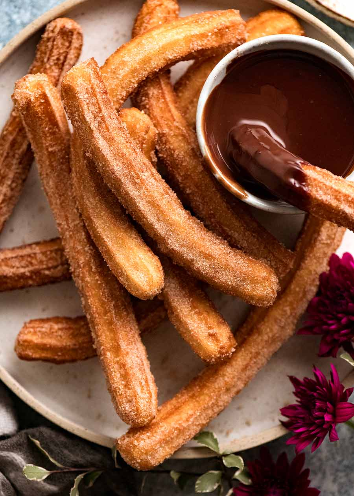
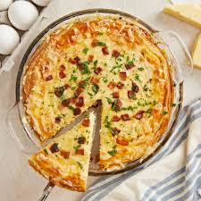

Crêpes
Thin pancakes with sweet or savory fillings
A French classic often sold from street stalls, crêpes are paper-thin pancakes made from wheat or buckwheat
flour. Sweet versions may be filled with Nutella, sugar, lemon, fruits, or jam, while savory ones (called
galettes) often have cheese, ham, eggs, or vegetables. They’re folded into a neat triangle or rolled up for
easy eating on the go.
📷 Source: NORDIC WARE
Galette-Saucisse
A sausage wrapped in a buckwheat pancake
Famous in Brittany, the galette-saucisse is a grilled pork sausage wrapped inside a buckwheat crêpe. It’s a
rustic yet delicious snack, similar to a hot dog but with French flair. The galette absorbs the sausage
juices, making it a satisfying handheld street food.
📷 Source: cuisineaz

Croque-Monsieur
A grilled ham and cheese sandwich (egg on top for Madame)
This Parisian favorite is a buttery toasted sandwich filled with ham and melted cheese, often topped with
creamy béchamel. The Croque-Madame variation adds a fried egg on top. Portable and hearty, it’s a common
street food and café snack across France.
📷 Source: Good HouseKeeping
Socca
Crispy chickpea pancake from Nice
Originating in Nice, socca is a thin pancake made from chickpea flour, olive oil, and water, cooked in a
wood-fired oven. Crisp outside and soft inside, it’s usually sprinkled with pepper and served hot in paper
cones. Gluten-free and naturally delicious.
📷 Source: RICARDO

Falafel Sandwich
Chickpea fritters in pita bread with veggies
Especially popular in Paris’s Marais district, falafel sandwiches are loaded with crispy chickpea fritters,
fresh vegetables, pickles, and creamy tahini sauce inside warm pita. Though Middle Eastern in origin, it’s
one of the most iconic Parisian street foods.
📷 Source: The Foodie Physician
Jambon-Beurre
Classic ham and butter baguette sandwich
The simplest and most beloved French lunch. Crusty baguette spread with salted butter and filled with cured
ham. Its charm lies in the quality of ingredients: good bread, creamy butter, and flavorful ham. Found in
bakeries and street stalls everywhere.
📷 Source: lindsey eats

Churros
Fried dough sticks with sugar
Often sold at fairs and seaside towns, French churros are fried dough sticks dusted with sugar and served in
paper cones. They are sometimes denser than Spanish churros, and vendors often offer Nutella or chocolate
sauce for dipping.
📷 Source: recipetineats
Frites
Golden, crispy fries in a paper cone
Double-fried for extra crispiness, French fries are a street food staple. Sold in cones or trays with sauces
like mayonnaise, aioli, or spicy ketchup. Especially popular in northern France, they’re perfect as a snack
or side dish.
📷 Source: FOOD&WINE

Quiche Lorraine
Savory egg tart with bacon and cheese
From the Lorraine region, this classic quiche is made with eggs, cream, smoky bacon, and cheese baked in a
flaky pastry shell. Often sold in bakeries by the slice, it’s a warm and filling street snack with countless
variations (spinach, salmon, vegetables).
📷 Source: BUDGET BYTE$
Beignets
French doughnuts dusted with sugar
These pillowy fried pastries are light and soft inside, dusted generously with powdered sugar. In southern
France, they’re sold hot from street vendors, sometimes filled with chocolate, jam, or custard. A sweet and
indulgent treat.
📷 Source: Southern Living